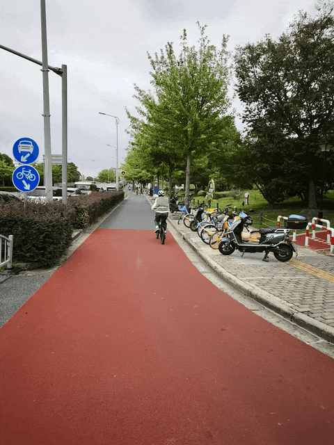
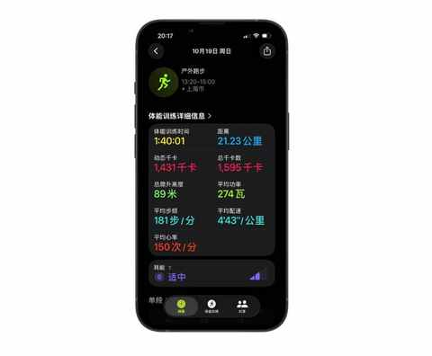
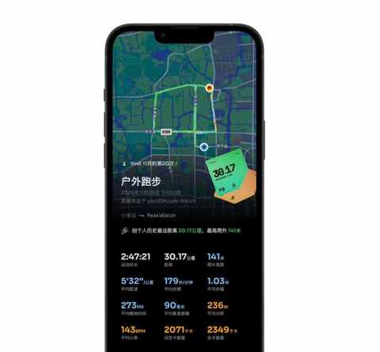
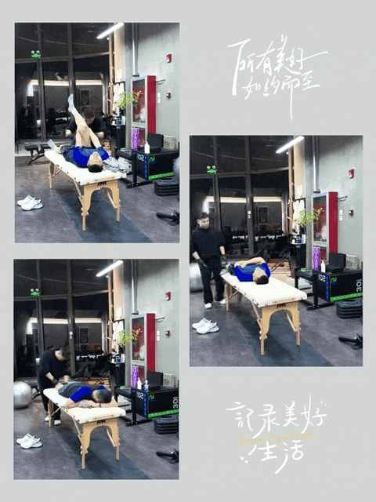

跑步两年半才明白：每个人的节奏，只有自己知道！
一、引子
从 9 月开始，逐步把跑量从 150km 增加到 200km 以上，因为 10 月、11 月、12 月都有一场比赛要跑，尤其是 12 月的首个全马。
因为没有跑过全马，所以难免会心里没底，甚至有一丝丝紧张，是面对未知的正常反应，在 11 月29 日按计划，顺利完成 30km，大大缓解了紧张感。

11 月也是跑步两年半以来，首次月跑量过 300km，比 10 月多 68km，一切都是为了首全马的备赛，这次的首马有一个明确的目标。
二、首全马想跑进 330
当目标明确之后，按自己的节奏，稳步推进。
1️⃣ 信心的建立
10 月 19 日，风和日丽，温度适宜，除了风大一点之外都是完美的。

老婆在前面骑车带路，我在后面跑，给一周后要进行的半马比赛测个速，最终如愿跑进 140。

天气好+状态不错！从 5km 到 10km 再到半马都 PB 了！
跑完后体感良好，心率也不算高，给一周后的比赛建立和很好的信心。
2️⃣ 两次达成比赛目标
10 月 26 日和 11 月 9 日是连续两场半马比赛，都是过万人的规模，两场比赛的目标都设置的是跑进 140，都顺利达成，也成功把半马PB了。
越跑越会知道的一个事实是：半马和全马不一样，全马不是两个半马的叠加。
3️⃣ 第一次30km
老实说跑 30km 没那么难，难的是想要按计划的配速来跑，尤其是一个人独自跑这种长距离。

比预计的配速慢 20 秒，掉速大的时间大概是 19 公里后，就当天稍有点累的状态来说，可以接受。
跑 30km 不痛苦，当天晚上的筋膜刀才是真的苦啊，那个酸爽，第一刀下去，面部表情便不受控制。

虽然酸爽度 Max，但效果显著，两条像灌了铅的腿，至少恢复 80%了。
4️⃣ 找到自己的节奏
最近增加跑量的过程，也是一个找到自己跑步节奏的历程。
① 跑休方式：从跑二休一改为跑五休二
② 单次距离：从 10km为主 变为 15km为主
③ 单次时长：从 60 分钟提高为 80 分钟以上
备战首马！月跑量即将首次突破300公里，我的5点真实感悟
由于跑量的增加，对跑步鞋的了解也增加不少，东哥的这段话也让人印象深刻。
中年初跑者增加跑量两个月后，对如何选跑鞋有了 3个新思考
11 月份的 300km 至少有 200km 都是新买的绝尘 4 跑的，是堆跑量的好鞋。
三、结语
备战首马，我学到的唯一重要的事是：答案不在别处，而在脚下。
寻找自己的节奏，是跑步的终极课程，也是生活的绝佳隐喻。
首马在即，我已不再焦虑。因为我知道，唯一的成功，不是配速，而是用属于自己的节奏，稳稳地跑完全程。